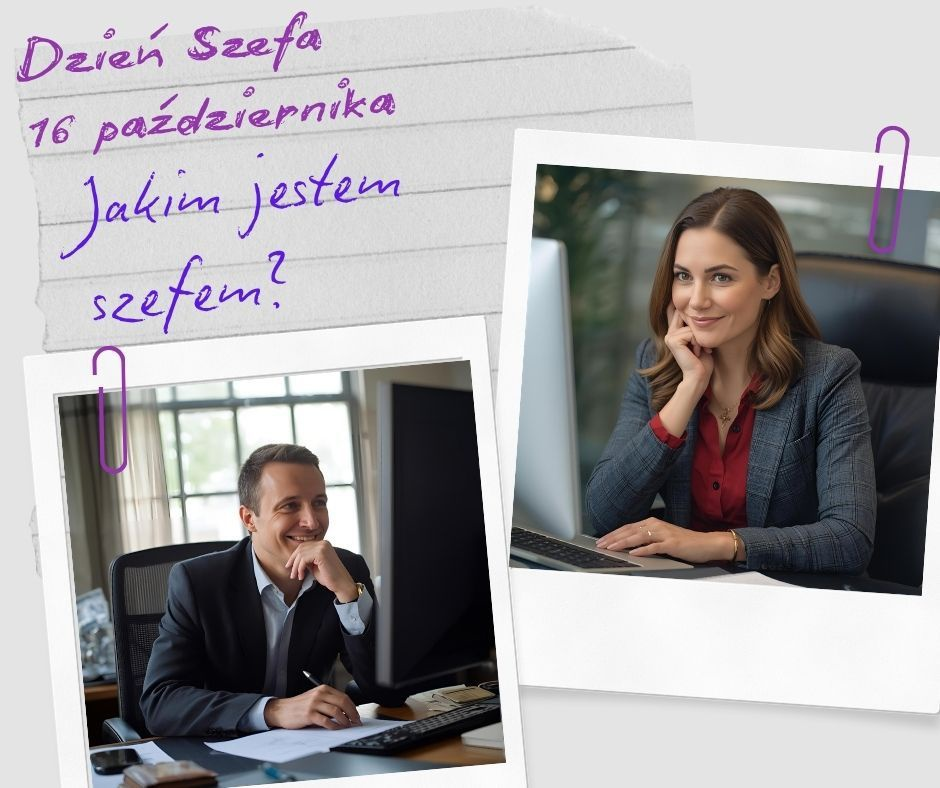

16 października 2025 · Justyna Siwek
Szefowie
📅 Drodzy Szefowie, z okazji Waszego święta, proponuję chwilę na refleksję pod hasłem „Jakim jestem szefem?”
Warto zatrzymać się w pędzie codzienności i odpowiedzieć sobie na kilka pytań, które pomogą w menedżerskim rozwoju:
✔️ Co w szefowaniu jest dla mnie ważne?
✔️ Czy wiem, co w moim szefowaniu jest ważne dla moich pracowników?
✔️ Czego wymagam od ludzi? Czego wymagam od siebie?
✔️ Co daję pracownikom, a czego od nich potrzebuję?
Nie spieszcie się z odpowiedziami, dobrze jest je zanotować i być maksymalnie ze sobą szczerym. Gotowi? To myślimy dalej i jeszcze bardziej perspektywicznie:
✔️ Czego chcę mieć mniej i robić mniej?
✔️ Czego chcę mieć więcej?
✔️ Co mogę zrobić, aby to osiągnąć?
I na koniec, podsumowujące, inspirujące i fundamentalne pytanie:
❓ W jakim miejscu mojej kariery liderskiej jestem, co osiągnęłam/osiągnąłem, a co jeszcze chcę osiągnąć?
I tu nie bójcie się marzeń. Co prawda samo afirmowanie do ich realizacji nie wystarczy (tu przypomina mi się genialna scena afirmowania z "1670"… 🤣 🤣 🤣 ), ale macie dostęp do wielu zasobów, które w rozwoju mogą Wam pomóc. Korzystajcie z nich.
🌹 Życzę Wam, żeby Wasze marzenia zamienione na plany, a plany na działania, doprowadziły Was do jeszcze większych liderskich sukcesów.
Czy ktoś chciałby podzielić się w komentarzu chociaż strzępem swojej refleksji? Zapraszam.
#DzieńSzefa #ExecutiveCoaching